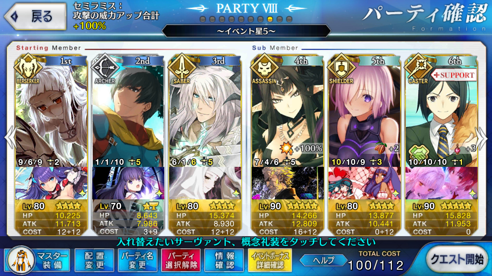

【FGO】繁栄のチョコレートガーデンズ・オブ・バレンタイン ブラック級（2/15まで）
この記事ではFGOイベントの周回を扱います。
編成画像にて最終再臨絵のネタバレがあるのでご注意を
基本方針
- 3T周回する
ドロップアイテム
- 原初の産毛
- 竜の牙
牙はデミングとほぼ同等のドロップ率だが、AP効率で言えば1/2
産毛も鮮血神殿とほぼ同等だが、牙と同じくAP効率で言えば1/2
QP変換可能なイベントアイテムがあるという点ではおいしい
エネミー構成
- カカオ60％
- カカオ80％
- チョコ丸（2w ウガル HP:122,593）
- チョコレート…いただきぃ!（3w 水着モードレッド HP:240,060）
天地人相性
相性有利の場合、与ダメージ+10％
相性不利の場合、与ダメージ-10％
| 敵 | 天地人 |
|---|---|
| チョコ丸 | 地 |
| チョコレート…いただきぃ! | 地 |
編成例

1wは素のステラでは撃ち漏らしが発生するため、エルバサでカリスマを使っておく
2wは軍神咆哮と全体強化を入れて虚栄の空中庭園
3wは後ろから孔明を引っ張り出し、バフを盛ってエルバサ→すまないの順で宝具チェインするだけ
星が出ない構成のため、セミラミスのスキル3は使えないものと思ったほうが良い
周回用キャラ選別
セミラミスを使ってくれと言わんばかりのライダー染め
アサシンで高火力を出せるキャラクターは限られ、全体宝具となると更に限られる
1w
Lv.70の素のステラでは撃ち漏らしてしまう
そのため、礼装やバフで対処する必要がある
凸魔性菩薩や凸バトルオリンピアがあれば、初期NP60からの孔明のNP10のみで突破可能
編成例ではエルバサのカリスマを使っている
凸カレスコ持ちであれば、セミラミスや狂ランスロットに開幕で撃たせてしまうのもありか
2w
ウガルが強敵
この周回の中でこいつだけ竜特性を持っておらず、特性としては猛獣のみ？
ただし、獣殺しのプロトクー・フーリンの宝具ではしっかりバフを盛らないと倒せない
ここでセミラミスを切ってしまえるのであればそれが一番楽だろう
それでもバフを盛る必要はある
全体宝具アサシンとして優秀なのは配布の水着スカサハ
自身のスキル3で宝具威力を上げられ、ブレイブチェインを組めれば1ターンで抜けることも可能
3w
モードレッドも含め、竜特性を持っているのでジークフリートの竜特攻が光る
しかしながら魔性菩薩 竜殺しLv.6 宝具Lv.5で英雄作成まで入れても18万程度で頭打ちになるため、もうひと押しがほしい
編成例ではエルバサを使用しているが、NPチャージスキルを持ったアサシンでも代用可能かもしれない
女性特攻もあるカーミラは優秀だが、スキルによるNPチャージは27で頭打ちになるので初期NP礼装と相談
パライソであれば、甲賀流を上げておけば最大でNPチャージ30がある
場合によってはギルガメッシュでも代用は効いてしまうかもしれないが、英雄王を代用呼ばわりは不敬であろう
カレスコ茶々やカレスコアビゲイルという選択肢も場合によってはあり得るか
特に後者であれば、全体にNP増加がかかるので礼装の選択肢が広がる